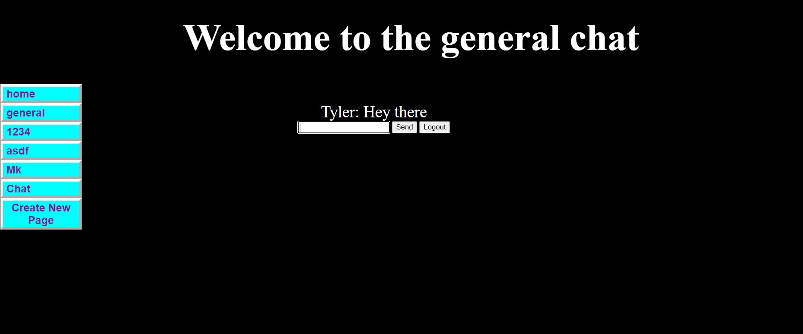
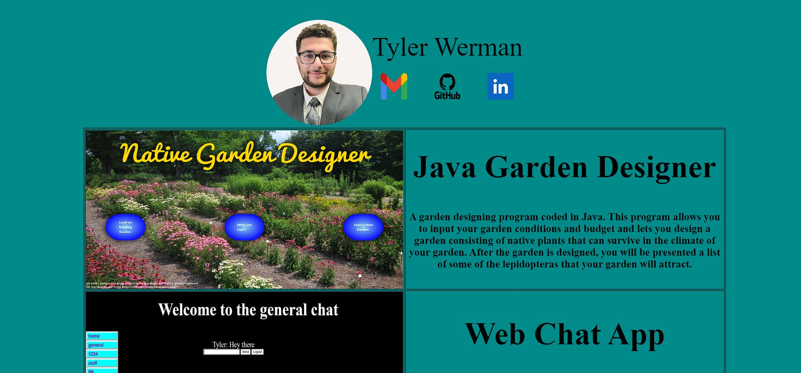

Tyler Werman


|
Java Garden Designer
A garden designing program coded in Java. This program allows you to input your garden conditions and budget
and lets you design a garden consisting of native plants that can survive in the climate of your garden. After
the garden is designed, you will be presented a list of some of the lepidopteras that your garden will attract.
|
|---|---|
|  |
Web Chat App
This web application is a Discord like chat app. It is written using HTML, JavaScript, CSS, and Google Firebase.
Like Discord, you can create new channels to chat in, write messages, edit messages, and delete messages.
|
|  |
Personal Website
This website was created from scratch using HTML and CSS. You have access to my email, Github, and LinkedIn
by clicking on the above icons. You can also view and read short descriptions on some of my previous projects.
|

|
One Piece Web Scraper
This webscraper was written entirely in Python and uses the Tkinter library to present the user with a interactable
GUI interface to search up information on any One Piece character. I also converted the python file into an executable
so it can be used from any computer.
|